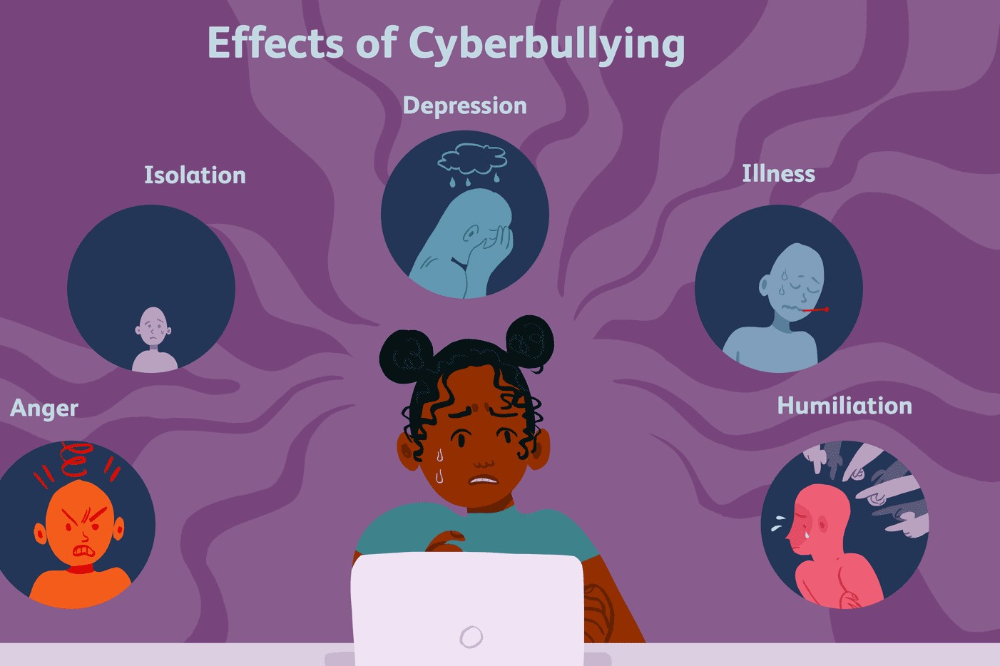

The Cause and Effect Of Cyberbullying

The Causes of Bullying in Children-
Bullying is a behavior that is not only negative but can be destructive for the victim.
It is an issue that needs to be addressed as soon as possible. Bullying is a serious issue
in the lives of many people, and it has been proven to have adverse effects on the individual.
It can cause feelings of isolation, fear, anxiety, and depression. Victims often feel alone and
they do not know where to turn for help. The sooner bullying can be stopped the better for everyone
involved.
The Effect of Bullying in Children-
Bullying is a serious form of violence against children. It not only affects the children who are
being bullied, but also those who bully as well as bystanders. Bullying can be physical,
psychological, social, or cyber-based. The effect of bullying on children can be very dire.
It can lead to academic underachievement and suspension from school among other consequences.
Children who are bullied often feel unsafe in their schools and fear getting to school or go
there for fear of being victimized by bullies again and again. This phenomenon is called
“school phobia” or “school refusal.” Many children with this condition give up on attending school
altogether which negatively impacts them academically and socially. We know that bullying can lead
to various problems such as: anxiety, depression, stress, anger and low self-esteem. It can also have
a negative effect on school performance. Bullying behaviors are associated with violence and criminal
behavior later in life.